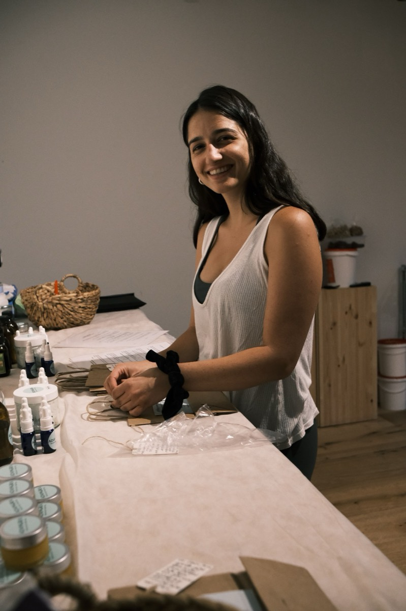

01 · AROMATHERAPY
ארומתרפיה חווייתית
בשבילי שמנים אתריים הם לא רק "חומרים פעילים" אלא שפה שלמה. בסדנה אנחנו מכירות את בית המרקחת של הטבע, ומתאימות תערובת לכל אחת לפי מה שהיא צריכה עכשיו.
לקבוע מפגשהבסיס
אני יובל דורון אבייב, נטורופתית מוסמכת, ארומתרפיסטית ומורה ליוגה. מלווה נשים בתהליכי החיים דרך טיפולים הוליסטיים, סדנאות ותנועה.
רוב העבודה שלי מתחילה בטלפון של מישהי שאומרת "יש לנו קבוצה". משם אנחנו בונות יחד את המפגש — מה מתאים לכן, כמה אתן, ואיפה זה קורה. אני מגיעה עם כל הציוד.

בסדנה אנחנו יושבות סביב שולחן אחד ומכירות את עולם השמנים דרך הריח, לא דרך הסבר. כל אחת מרכיבה משהו בידיים שלה ולוקחת אותו הביתה. אני מגיעה עם כל הציוד, וגם למי שלא נגעה בזה מעולם זה עובד.
בשבילי שמנים אתריים הם לא רק "חומרים פעילים" אלא שפה שלמה. בסדנה אנחנו מכירות את בית המרקחת של הטבע, ומתאימות תערובת לכל אחת לפי מה שהיא צריכה עכשיו.
לקבוע מפגש
ההמשך של הארומתרפיה, למי שרוצה גם לרקוח: שתי מרקחות שאנחנו מכינות יחד — משחה, שמן או מרח — ושיוצאות איתכן הביתה. אפשר גם ארומתרפיה בלבד, בלי החלק הזה.
לקבוע מפגש
בשבילי יוגה היא ממש לא "עוד אימון כושר". זה המקום שבו אנחנו לומדות להשקיט את המחשבות, ולגלות שאפשר להתקדם גם מתוך הרפיה. שיעור בחוץ או בפנים, לקבוצה שרובה לא תרגלה מעולם.
לקבוע מפגש
יום שלם יחד: מתחילות ביוגה בבוקר, וממשיכות לארומתרפיה אחרי. מתאים לקבוצה שרוצה לצאת מהשגרה ליום אחד ולחזור אחרת.
לדבר על יוםחברות, משפחה, ריטריט, מסיבת רווקות, בת מצווה. אצלי בעמק האלה או אצלכן.
סטודיו, חנות, בית אבות, צוות קטן שרוצה בוקר אחר.
עיריות, מוסדות וצוותי חינוך. מגיעה עם הציוד לכל מקום בארץ.
מדי פעם אני פותחת מפגש לתאריך מסוים, שאפשר להצטרף אליו גם לבד. המועדים הקרובים יופיעו כאן, ואשמח לעדכן אותך כשנפתח הבא.
לקבל עדכון על המועד הבאאנחנו מתחילות בשיחה כדי להבין בדיוק מה את צריכה, ומשם בוחרות את הטיפול. כל הטיפולים הם לנשים, בקליניקות בתל אביב ובעמק האלה.

הטיפול המשולב מחבר בין כמה מהם: שיחה, תערובת שמנים אישית, רייקי ורפלקסולוגיה עדינה — ובסופו את יוצאת עם תערובת שממשיכה לתמוך בך גם בבית. סקרנתי אותך?

אפשר לפעול ולהתקדם בעולם גם מתוך הרפיה
אובחנתי עם קרוהן אחרי מסע בדיקות שארך תשעה חודשים, ובמשך שנים ניסיתי לחיות "חיים רגילים" עם כדורים. נקודת התפנית הגיעה דרך תזונה, צמחי מרפא ועבודה נפשית — ומשם הגעתי ללימודי נטורופתיה. האני המאמין שלי הוא שמודעות היא הצעד הראשון לריפוי.
כל תערובת נרקחת בהתאמה אישית, אז ההזמנה עוברת בשיחה או בוואטסאפ. הקטלוג המלא יהיה כאן להורדה.